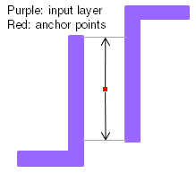

Anchor
Usage
Anchor
‑layer {input_layer_name…input_layer_nameN}
‑width width_value
{‑space space_value |
{‑length_LE length_LE_value ‑space_LE_LE space_LE_LE_value
‑space_LE_E space_LE_E_value ‑space_E_E space_E_E_value}}
‑merge_distance merge_distance_value
‑layer_out layer_out_name
[‑parallel_lines_length parallel_lines_length_value ‑parallel_lines_space
parallel_lines_space_value]
[‑mergeTileLength merge_tile_length_value ‑maxAnchorPoints
max_anchor_points_value]
[‑classification_halo classification_halo_value]
Description
The Calibre LFD::Anchor command identifies areas of the layout that are potential litho hotspots. Anchor points are generated at critical sites near corners and parallel line structures that meet certain criteria. These sites are marked with anchor points on the output layer. If you specify LFD::AnchorRule before LFD::Anchor in the Calibre LFD rule file, spacing and width arguments are overriden by corresponding arguments specified in LFD::AnchorRule.
The anchor points are used as input to the capture function Calibre LFD::StructureOutput to generate a pattern description file. The pattern description file can be passed to the function Calibre LFD::StructureOptimizer, where simulation and pattern matching determine if the anchor points predict a litho hotspot that results in a problematic pattern.
When specifying the criteria for anchor points, both width and space values are required. For example, if there is a concave corner, then any polygon shape within this concave corner with a width less than the specified ‑width value generates an anchor point. Likewise, for a convex corner, any polygon shape within a distance less than the specified ‑space value generates an anchor point.
The LFD::Anchor supports only Manhattan (orthogonal) corners.
There are two conditions that determine if an area of the layout receives an anchor point.
If the nearby polygon structures are close enough for a corner to have an influence on them, where “nearby” is related to the minimum width and spacing of the technology.
If the location has parallel line shapes that meet both of the following constraints:
The common length of the parallel line shapes is greater than or equal to the parallel_lines_length_value given in the command.
The separation between the parallel line shapes is less than or equal to the parallel_lines_space_value given in the command.
Figure 3. Anchors Generated from Parallel Lines
In the case of very dense designs, it is desirable to reduce the number of anchor points, thus reducing the number of close anchor points that are later translated to similar patterns. The required keyword ‑merge_distance is provided to reduce the number of collinear anchor points. Anchor points that are in intervals less than or equal to the specified merge_distance_value are grouped together in a single anchor point. The size of the pattern is a factor in identifying the merge distance between anchor points. If the merge distance is too big, two distant anchor points are merged into one anchor point, possibly missing a candidate for a problematic pattern. The parameter merge_distance_value applies when merging collinear anchor points.
For anchor points that are non-collinear, an optional merging algorithm can be used to reduce the number of non-collinear anchor points by specifying the optional keywords ‑mergeTileLength and ‑maxAnchorPoints. These two keywords must be specified together. This merging mechanism partitions the design into LxL merging tiles, where L is the length of the tile edge defined by ‑mergeTileLength.
If the ‑classification_halo optional keyword is also specified, then the effect of the keywords ‑mergeTileLength and ‑maxAnchorPoints is applied to the anchor points before the ‑classification_halo keyword.
Arguments
- {‑layer input_layer_name …input_layer_nameN}
Required keyword and argument specifying the input layer name. A list argument can be used to specify multiple input layer names.
- ‑width width_value
Required keyword and argument that defines the width of the input layer shape that is critical. This value gives the constraint for anchors near to concave corners. Specify this value in user units. Widths at or below this value are considered for anchor point sites.
- ‑space space_value
Required keyword and argument that defines the space between shapes of the input layer that is critical. This value gives the constraint for anchors near to convex corners. Spaces at or below this value are considered for anchor point sites. Specify this value in user units.
- ‑length_LE length_LE_value ‑space_LE_LE space_LE_LE_value ‑space_LE_E space_LE_E_value ‑space_E_E space_E_E_value
Required keyword set and arguments specifying the critical length and space constraints for generating anchor points. This keyword set is used in place of the -space argument.
‑length_LE length_LE_value
Required keyword and argument specifying the maximum length of an edge that can be defined as a line‑end. Any length greater than this value is defined as an edge. Specify this value in user units.
Figure 5. LFD::Anchor Length LE
‑space_LE_LE space_LE_LE_value
Required keyword and argument specifying the maximum space between two line‑ends that can result in anchor points. Parallel line‑ends with separation less than or equal to ‑space_LE_LE result in an anchor point between the two parallel line‑ends. Specify this value in user units.
Figure 6. LFD::Anchor Space LE_LE
‑space_LE_E space_LE_E_value
Required keyword and argument specifying the maximum space between a line‑end shape and an edge that can result in anchor points. Only line-end corners with edge distances that are less than or equal to this value are considered for anchor points. Specify this value in user units.
Figure 7. LFD::Anchor Space LE_E and E_E
‑space_E_E space_E_E_value
Required keyword and argument specifying the maximum space between edges that can result in anchor points. Only edges whose distances are less than or equal to this space are considered for anchor points. Specify this value in user units.
- ‑merge_distance merge_distance_value
Required keyword and argument that specifies how collinear anchor points are merged. Anchor points separated by a distance less than or equal to merge_distance_value are merged into one anchor point. Specify this value in user units.
- ‑layer_out layer_out_name
Required keyword and argument that specifies the name of the output layer that contains the anchor points.
- ‑parallel_lines_length parallel_lines_length_value
Optional keyword and argument that specifies that an anchor point is created if the common length of the parallel line shapes is greater than or equal to parallel_lines_length_value. If specified, the ‑parallel_lines_space keyword and value must also be specified. Specify this value in user units.
- ‑parallel_lines_space parallel_lines_space_value
Optional keyword and argument that specifies that an anchor point is created if the space between the parallel line shapes is less than or equal to parallel_lines_space_value. Resulting anchors are located at the midpoint between the parallel line shapes. If specified, the ‑parallel_lines_length keyword and value must also be specified. Specify this value in user units.
- ‑mergeTileLength merge_tile_length_value
Optional keyword and argument that specifies the length of the tile edge that is used for merging non-collinear anchor points. Use this keyword together with the ‑maxAnchorPoints keyword. Specify this value in user units.
- ‑maxAnchorPoints max_anchor_points_value
Optional keyword and argument that specifies the maximum number of anchor points within a merging tile. If the number of anchor points is greater than or equal to this value, then the anchor points within a merging tile are replaced by a single anchor point in the center of the tile. The ‑maxAnchorPoints and the ‑mergeTileLength keywords are used together. Express this value as a positive integer.
- -classification_halo classification_halo_value
Optional keyword and argument that reduces the number of anchor points by using the Calibre OPCverify tool classify command to check the anchor point and the surrounding halo region for similarities. Only the unique anchor points are displayed. Specify this value in user units.
Examples
Example 1
The following is an example of the LFD::Anchor command using anchor point merging options:
LFD::Anchor
‑layer poly \
‑width 0.001 \
-space 0.001 \
‑merge_distance 0.001 \
‑parallel_lines_length 0.7 \
‑parallel_lines_space 0.7 \
‑classification_halo 0.005 \
‑maxAnchorPoints 40 \
‑mergeTileLength 30 \
‑layer_out anchors
Example 2
In the following example, the ‑space keyword is not specified in LFD::Anchor, so the spacing rules are defined by the keyword set ‑length_LE, ‑space_LE_LE, ‑space_LE_E, and ‑space_E_E:
LFD::Anchor
-layer {M1_1 M1_2} \
-width 0.05 \
-length_LE 0.05 -space_LE_LE 0.02 -space_LE_E 0.01 -space_E_E 0.05 \
-parallel_lines_length 0.7 \
-parallel_lines_space 0.03 \
-merge_distance 0.05 \
-layer_out anchors "